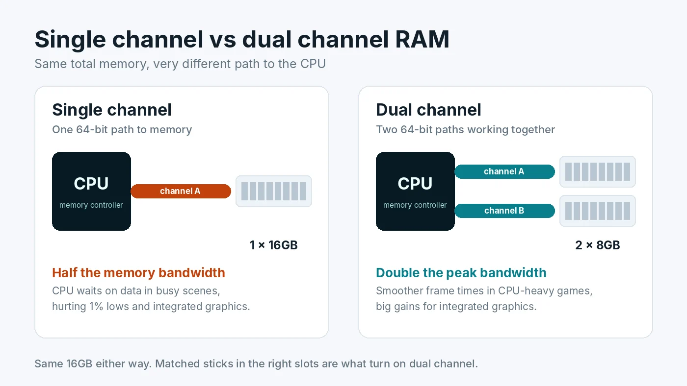

Single vs Dual Channel RAM: Does It Bottleneck Gaming?
Two PCs can both have 16GB of RAM and still perform differently in games. One has a single 16GB stick, the other has two 8GB sticks. The difference is memory channels, and it is one of the most common hidden bottlenecks in prebuilt desktops and gaming laptops. This guide explains what channels do, how much performance one stick really costs, and how to check and fix your setup in a few minutes.

What a Memory Channel Is
The processor's memory controller talks to RAM over channels. Think of each channel as a lane on a road between the CPU and your memory. Most desktop and laptop processors have two channels. With one stick installed, only one lane carries traffic. With two matched sticks in the correct slots, both lanes work at once and the peak bandwidth roughly doubles.
Capacity and channels are separate things. Capacity is how much the warehouse can hold. Channels are how many loading doors it has. Running out of capacity causes heavy stutter, which our guide on whether 16GB of RAM is enough for gaming covers. Channels decide how quickly the CPU can pull data it already has in memory.
How Much Performance Does Single Channel Cost?
The answer depends heavily on what is doing the work.
With a dedicated graphics card
The graphics card has its own VRAM, so system memory mainly feeds the CPU. In GPU-heavy scenarios, such as 4K with high settings, the difference is often small. In CPU-heavy games, such as large multiplayer matches, simulation and strategy titles, or high refresh 1080p play, single channel memory commonly lowers average FPS by a noticeable margin and hurts 1% lows even more. That shows up as uneven frame pacing in busy scenes. Exact numbers vary by game, CPU and memory speed, so treat any single percentage you see online as an example rather than a rule.
With integrated graphics
This is where single channel hurts most. Integrated graphics, including AMD APUs and Intel's built-in graphics, have no VRAM of their own and use system RAM instead. Halving the bandwidth can cut frame rates dramatically, and dual channel is one of the cheapest and most effective upgrades for an integrated graphics PC.
Why it looks like a CPU bottleneck
When memory is too slow to feed the processor, the CPU spends time waiting rather than working. Monitoring tools often show the same pattern as a CPU bottleneck: GPU usage drops below its maximum while frame rates stall. Checking memory channels before buying a new CPU can save real money.
How to Check Your Channel Mode
- Count your sticks. Open Task Manager, go to Performance, then Memory. "Slots used" shows how many sticks are installed. If it says 1 of 2 or 1 of 4, you are in single channel.
- Confirm with CPU-Z. This free tool shows channel mode on its Memory tab under "Channel #". For DDR4, Dual or 2 x 64-bit means dual channel. For DDR5, a single stick usually shows 2 x 32-bit and two sticks show 4 x 32-bit, because each DDR5 stick has two smaller subchannels. Do not mistake 2 x 32-bit on one DDR5 stick for dual channel.
- Check the speed while you are there. CPU-Z also shows the memory frequency. If it is far below what your kit is rated for, read how to enable XMP or EXPO.
Our guide on how to check PC usage explains the other Task Manager readings worth watching while you game.
How to Enable Dual Channel
1. Use two matched sticks
The simplest path is a kit of two identical sticks, such as 2x8GB or 2x16GB. Kits are tested together, which reduces compatibility surprises. If you already have one stick, buying the same model and speed often works, but a sold-as-a-pair kit is the safer choice.
2. Put them in the right slots
On most four-slot motherboards, two sticks go in the second and fourth slots counting from the CPU, usually labeled A2 and B2. Putting both sticks in neighbouring slots can leave them on the same channel. Your motherboard manual has a table showing the recommended order, and it is worth checking because a few boards differ.
3. Restart and verify
Boot into Windows and check CPU-Z again. If the mode has not changed, reseat both sticks firmly and confirm the slot positions.
Gaming Laptops and Prebuilt PCs
Many laptops and budget prebuilts ship with a single stick to keep costs down or leave room for upgrades. If your laptop has a free memory slot, adding a matching stick is often a quick win. Some thin laptops have memory soldered to the board, so check the model's specifications before buying anything. Our gaming laptop bottleneck guide covers other common laptop limits such as power and heat.
Two Sticks or Four?
On a typical dual channel platform, four sticks do not add more channels. They add capacity, but also more electrical load on the memory controller, which can force lower speeds, particularly with DDR5. For most gaming PCs, two sticks of the capacity you need is the better choice. If you want 32GB, a 2x16GB kit is usually better than 4x8GB.
Mixing Different Sizes
Many modern platforms support a flexible mode. With an 8GB and a 16GB stick, the first 16GB, 8GB from each stick, runs in dual channel and the remaining 8GB runs in single channel. It works, but performance becomes less consistent, and mismatched sticks can be harder to run at their rated speed. Matched kits remain the simplest option.
Channels vs RAM Speed: Which Matters More?
Moving from single to dual channel usually brings a bigger gain than moving to a faster speed rating, because it doubles the available bandwidth. Faster memory and tighter timings are the next step after that. For the details, see whether RAM speed affects FPS and our broader guide on how RAM affects gaming performance.
Conclusion
A single stick of RAM is one of the easiest bottlenecks to miss, because the capacity looks fine on paper. It matters most in CPU-heavy games and on integrated graphics. Check "Slots used" in Task Manager, confirm the mode in CPU-Z, and if you are in single channel, add a matching stick in the correct slot. To see whether your CPU and GPU are balanced once memory is sorted, try the free PC Bottleneck Calculator.
Frequently Asked Questions
Is single channel RAM bad for gaming?
It is not broken, but it leaves performance on the table. In CPU-heavy games, single channel memory often lowers average FPS and hurts 1% lows more noticeably. With integrated graphics the loss is much larger, because the graphics chip shares system memory bandwidth.
Is 1x16GB or 2x8GB better for gaming?
2x8GB is usually faster because it runs in dual channel. 1x16GB has the same capacity but only one channel. If you buy a single 16GB stick, add a matching second stick later to unlock dual channel.
How do I check if my RAM is running in dual channel?
Open CPU-Z and look at the Memory tab. Channel # shows Dual or 2 x 64-bit for DDR4. For DDR5, a single stick usually shows 2 x 32-bit and two sticks show 4 x 32-bit, because each DDR5 stick has two smaller subchannels.
Which slots should I use for two RAM sticks?
On most four-slot motherboards, use the second and fourth slots from the CPU, usually labeled A2 and B2. Always confirm in your motherboard manual, because the recommended slots can differ.
Can I mix RAM sticks of different sizes in dual channel?
Many modern platforms support a flexible mode where the matching portion runs in dual channel and the rest runs in single channel. It works, but matched kits are simpler, more stable and give consistent performance.
Sources
Official documentation and tools referenced in this guide: